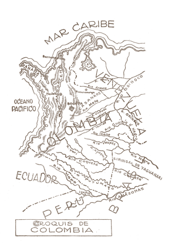

Desde su publicación en 1924, La vorágine de José Eustasio Rivera ha generado conversaciones
críticas
sobre
aspectos sociales, económicos, humanos y políticos de la macrorregión Orinoco-Amazónica de Colombia
y
sus
fronteras.
Aunque estas conversaciones han cambiado de enfoques a lo largo de un siglo, no pierden relevancia en
cuanto
a las relaciones humanidad-naturaleza-economía.
El propósito de esta página es proponer diversas lecturas de la novela con base en siete ejes
temáticos, o
vértices. Los usuarios encontrarán aquí documentos digitales que dan cuenta del contexto político,
social,
económico y de publicación de La vorágine, una edición digital de la novela que toma como
base la
quinta
edición –considerada la definitiva- que publicó Rivera en 1928, y los resultados de talleres de
mediación de
lectura y escritura que la Subgerencia Cultural del Banco de la República realizará entre 2024 y
2028 en
diversas regiones del país.
Ángela Pérez Mejía
Subgerente Cultural
Banco de la República
Fernando Barona Tovar
Director
Red de Bibliotecas del Banco de la República
Sandra Concha Roldán
Directora
Unidad de Gestión de la Red Cultural
Rafael Torres Acosta
Subdirección Administrativa
Red de Bibliotecas del Banco de la República
Diana Restrepo Torres
Subdirectora de Procesos Técnicos
Red de Bibliotecas del Banco de la República
Juan Pablo Salavarrieta Marín
Subdirector de Servicios al Público
Red de Bibliotecas del Banco de la República
Coordinación
María Alejandra Pautassi Restrepo
Biblioteca Virtual, Red de Bibliotecas Banco de la República
Curadoría y textos
Carlos Guillermo Páramo Bonilla
Margarita Serje de la Ossa
Asistentes curatoriales
Anderson Villalba Rey
Ángela Daniela Zárate Díaz
Sergio Sarmiento Salcedo
Viviana Olave Quintero
Corrección de estilo
Patricia Miranda
Archivo ciudadano La vorágine: lecturas para otros caminos posibles
Andrea Arce Lourido
Ángela Zárate Díaz
Diana Salas Solórzano
Sergio Sarmiento Salcedo
Stephanie Sarmiento Rojas
Mediadores de lectura
David Cortés - Santa Marta
Jonathan Alexander España Eraso - Pasto
Limedis Castillo - Riohacha
Lizeth Gómez - Buenaventura
Mayra Ricardo Zuluaga - Leticia
Nayib Camacho - Villavicencio
Porfidio Bello Perdomo - Neiva
Yaneth del Carmen Chaves Ruales - Florencia
Diseño y programación
Mottif
Agradecimientos especiales
Archivo Semana
Biblioteca Nacional de Colombia
Ediciones Uniandes
Equipo Subdirección de Servicios Red de Bibliotecas del Banco de la República
Centros culturales del Banco de la República
Yuly Fernando Ríos Palomeque - Buenaventura
Ricardo Jiménez Urueña - Florencia
Clara Gabriela Marín Lujan y María del Pilar Trujillo Cabrera - Leticia
Martha Lucía Monsalve Díaz - Neiva
Fernando Javier Palacios Valencia e Isabel Cortez Lagos - Pasto
Esteban Mauricio Narváez Polo y Jesika Leonor Toncel Mendoza - Riohacha
Joaquín Rafael Viloria de la Hoz e Ian Farouk Simmonds Ariza - Santa Marta
Edgar Eduardo Castro Tejeiro - Villavicencio
Grupo de Proyectos Digitales de la Subgerencia Cultural